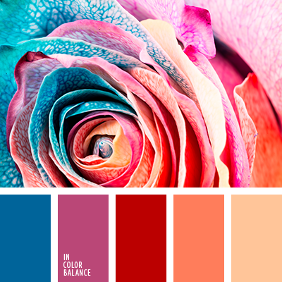
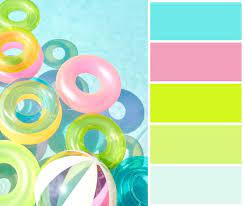
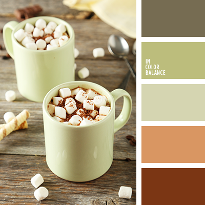
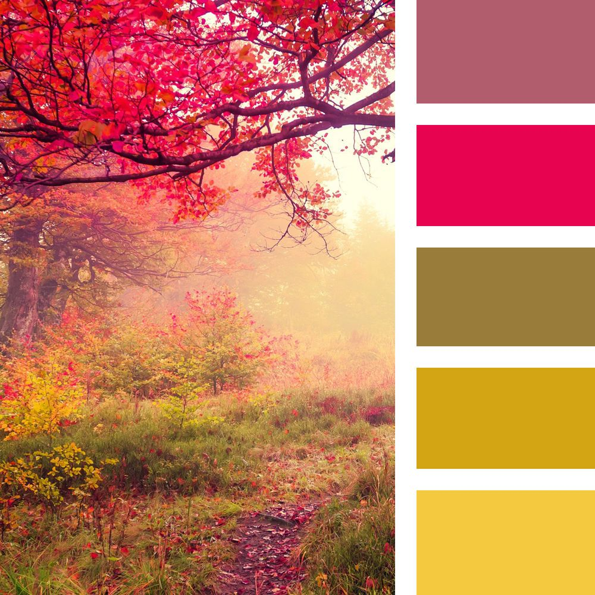
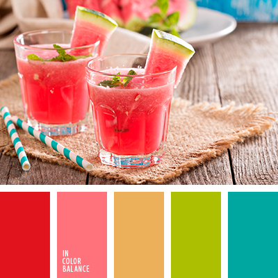

- - покращення конверсії вашого продукту;
- - для зручності використання продукту;
Про колористику
Кoлір (у контексті теми також ба́рва) — суб'єктивна характеристика сприйняття світлової хвилі, і яка ґрунтується на здатності людського зору розрізняти електромагнітне випромінювання з довжиною хвиль у межах видимого діапазону (видимий діапазон — довжини хвиль від 380 до 760 нм). Сприйнятий колір (випромінення або об'єкта) залежить від його спектру та від психофізіологічного стану людини.
Розрізняють спектральні і неспектральні кольори (наприклад, пурпурний або брунатний колір), а також ахроматичні кольори (білий, сірий, чорний).
Щоб створити гарний дизайн та використовувати кольори більш ефективно, потрібно зрозуміти, як
формуються
кольори та як
вони співвідносяться один з одним. Ось чому студенти в художніх школах,коледжах та
університетах
вивчають
науку теорії
кольорів, присвячену природі кольору. Ми пропонуємо вам у короткому і доступному викладі
основи теорії кольорів про комбінацію кольорів,
які можуть бути ефективно застосовані у процесі створення вашого дизайну.
Колористика в веб-дизайні, теорія кольору
Дослідження, надані компанією Colorcom, показують, що люди потребують лише 90 секунд для того, щоб зробити підсвідому оцінку продукту, від 62% до 90% – лише на основі кольору. Отже, правильно підібрані кольори можуть бути корисними для: а також
Чому важлива колірна схема сайту
Кольори для сайту за умови грамотного використання стають ефективним маркетинговим інструментом. Вони впливають на підсвідомість користувача і формують позитивне ставлення до бренду, продукту, викликають довіру. Хочете заробляти більше – перегляньте дизайн свого ресурсу, особливу увагу приділивши саме кольору.
- - люди приймають рішення про покупку або подальшого вивчення ресурсу протягом 90 секунд першої взаємодії.
- - саме web-кольори надають від 60 до 90% впливу на прийняття рішення про співпрацю.
- - яскраві картинки запам’ятовуються краще чорно-білих.
- - чоловіки і жінки бачать картинки по-різному – ваше завдання зацікавити і т
- - синій – найбільш популярний, нейтральний і універсальний відтінок.
Які кольори привертають найбільшу увагу
Палітра кольорів для сайту повинна бути красивою, в більшості випадків не кричущою. Всі відомі відтінки діляться на 2 великих групи:
- - кольори, які привертають увагу.
- - нейтральні тони.
Також гарні кольори повинні гармонійно поєднуватися в дизайні сайту і відповідати завданням конкретної компанії. Обов’язково враховуйте фірмовий стиль, напрямок роботи організації. Яскраві відтінки в оформленні допустимі, але для вузького переліку компаній. Якщо ви працюєте в області права, нерухомості, а не організації свят або інших креативних областях, краще буде зупинитися на лаконічному стриманому варіанті.
Найбільш вражаючі кольори для веб-сторінок – червоний, оранжевий, жовтий, зелений, синій і фіолетовий. Їх можна акуратно поєднувати між собою, але в кількості не більше двох одночасно. Безпрограшний варіант – розведення акцентних кольорів нейтральними (білий, чорний, сірий).
Як правильно підібрати кольори для візуалізації: кольорові схеми
Вибір будь-якої кольорової гами – будь то для графіка, веб-сайтів, брендів і т.д. – це виклик сам по собі. Адже саме цей вибір кольорів створює настрій для всього, що ви створюєте, тому надзвичайно важливо вміти його робити правильно.
Візуалізація данних
Коли справа доходить до візуалізації даних, колір особливо важливий. Кольорова схема задає тон образів і кожен колір служить для подання унікальних фрагментів інформації. Кольори, що ви використовуєте у вашій візуалізації даних – це більше, ніж просто одна ідея. Кольорова схема має силу відображати тип даних, які ви показуєте, їх відносини, відмінності між категоріями, і багато іншого. Цей туторіал проведе вас через процес вибору ідеального поєднання кольорів для вашої наступної візуалізації даних: від розуміння ваших даних, до того, щоб знайти правильний інструмент для кольорів.
Чи ваші дані послідовні, чи якісні?
Перший крок при виборі кольорової схеми для вашої візуалізації даних є розуміння того, з якими даними ви працюєете. Є три основні категорії, які мають значення при виборі кольорів для даних: послідовні, розбіжні, і якісні кольорові схеми.
Послідовні (Sequential) кольорові схеми
використовуються для організації кількісних даних від максимуму до мінімуму, завдяки ефекту градієнта. З кількісними даними, ви як правило, хочете показати прогресії, а не контраст. Використання градієнта на основі кольорової схеми дозволяє показати цю прогресію, не викликаючи непорозумінь.
Якісні (Qualitative) кольорові схеми
використовуються, щоб підкреслити – як ви вже здогадалися – якісних категорій. За допомогою якісних ви хочете створити багато контрасту, що означає використання різних відтінків для подання кожної з ваших точок даних.
Психологія кольору
А чи ви знаєте, що кольори мають психологічне значення? Без розуміння того, як кольори сприймаються людьми, створювати повноцінний дизайн буде не просто, тому сьогодні DesignTalk.club познайомить вас із психологічними аспектами перцепції кольору.
Ми часто пов’язуємо різні кольори з почуттями або думками. За останні роки було зроблено дуже багато досліджень, щоб з’ясувати, які кольори люди пов’язують з різними настроями.
На сайті Pinterest можна знайти велику кількість колірних палітр, створених дизайнерами з усього світу. Ян Барнард, творець компанії Vintage Design Co, розповідає, як він використовує Pinterest: «Якби я працював над створенням плаката про пляжний відпочинок, то я ввів би в пошук на сайті запит «літні колірні палітри» і вибрав би підходящий варіант». І от що вони показали:
Синій: Безпечний, спокійний, чесний, надійний, сильний, турботливий
Корпоративні підприємства часто використовують синій колір, щоб передати нейтральне почуття довіри. Синій колір схеми Facebook, наприклад, допомагає донести до користувачів, що це безпечна, сильна соціальна мережа. Це передає користувачам відчуття конфіденційності та безпеки навіть при спільному використанні і відображенні великої кількості особистої інформації.
Синій – колір №1 серед улюблених кольорів людей. 53% прапорів використовують синій. Не менш популярний він в айдентиці.
Корпоративні підприємства часто використовують синій колір, щоб передати нейтральне почуття довіри. Синій колір схеми Facebook, наприклад, допомагає донести до користувачів, що це безпечна, сильна соціальна мережа. Це передає користувачам відчуття конфіденційності та безпеки навіть при спільному використанні і відображенні великої кількості особистої інформації.
Червоний: енергія, любов, захоплюючий, дія, сміливий, пристрасний, революційний
Це найпопулярніший колір у прапорах світу (77% прапорів містять цей колір). Також це міжнародний колір сигналу зі значенням “стоп”. Coca-Cola є одним з класичних прикладів того, як компанія використовувала червоний у своєму брендингу для донесення користувачам, який це захоплюючий і енергійний продукт.
Помаранчевий: життєрадісний, товариський, доброзичливий, доступний, повний здоров’я
Помаранчеву символіку активно використовують/використовували Blogger, RSS feed, MozillaFirefox. Цей колір гарно підходить для знижок, а також асоціюється з осінню, і з усім, що пов’язане із дітьми.
Жовтий: логічний, оптимістичний, далекоглядними, грайливий, впевненість
Жовтий колір залучає нашу увагу, як жоден інший. У більшості релігій він асоціюється із божеством. А також символізує сигнал “увага” на дорогах. Гарний прикладів – Bzzy – додаток, який дозволяє легко автовідповідати вашим друзям, коли ви зайняті, використовує жовту кольорову схему для надання своєму іноваційному стилю грайливості.
Фіолетовий: Уява, творчість, ностальгія, містика, шляхетність
Є величезне різноманіття поглядів на цей колір. Він по-своєму сприймається різними поколіннями. Та й загалом фіолетовий неоднозначний: його або люблять, або ненавидять. У деяких культурах – це колір трауру та смерті. Тим не менше, його використовують/використовували такі відомі як бренди Viber, Yahoo!.
Зелений: зростання, органіка, натуральний, турботливий, свіжий, земля
Зелений допомагає передати природне походження і відчуття органічності тому всі виробники їжі прагнуть використовувати його у брендингу. Не менш популярний він і серед аптек. Також зелений символізує міжнародний знак: “рух дозволено”. Серед брендів, що активно використовують/використовували цей колір: WhatsApp, Vine, Facetime.
Чорний: Вишуканість, розкіш, спокусливий, формальний, авторитет
Не дарма цей колір так полюбляють у світі моди. Google, класичний приклад багатоканальної, грайливої компанії, що ефективно передається завдяки використанню багатобарвної кольорової схеми
Види кольорових палітр
Різні кольори та відтінки по-різному впливають на наші емоції та асоціації. Також кольори впливають на наше сприйняття дизайну. Неважливо, що це за дизайн – інтер'єру, сайту чи мобільного додатка- Поєднання кольорів відіграє дуже важливу роль. Лише кілька століть тому вибір квітів, тобто пігментів, був дуже невеликим. Фарби отримували з різних мінералів і рослин, і ремісникам того часу було досить легко підібрати кольори, що поєднуються. Сучасним дизайнерам набагато складніше – у їхньому розпорядженні величезна кількість відтінків і часом буває болісно важко підібрати кольори, що гармонійно поєднуються. Кожен дизайнер вирішує цю проблему по-своєму. Одні діють інтуїтивно, перебираючи відтінки майже навмання, інші методично складають готові палітри, а потім використовують їх у своїй роботі.
    